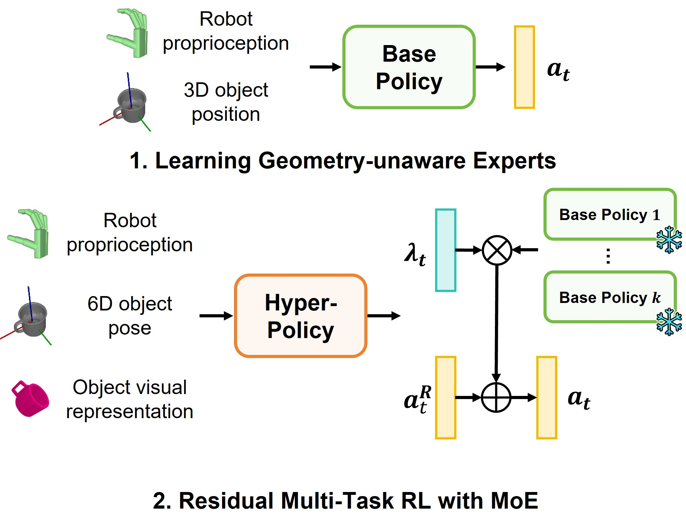
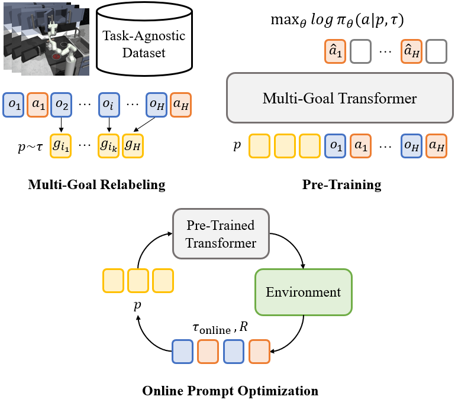
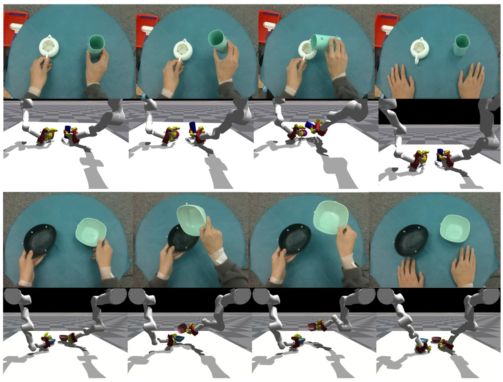

Haoqi Yuan 袁昊琦
I am a fourth-year Ph.D. student at Peking University, advised by Prof. Zongqing Lu. I received my Bachelor's degree in 2021, from the Turing Class at Peking University.
My research interest primarily lies in reinforcement learning (RL), representation learning, and generative modeling. Currently, I am focusing on: (1) pre-training and generalization in RL; (2) RL for open-world & embodied agents.

Selected Papers

Cross-Embodiment Dexterous Grasping with Reinforcement Learning
Haoqi Yuan, Bohan Zhou, Yuhui Fu, Zongqing Lu
ICLR, 2025
conference paper / arXiv / project page / bibtex
CrossDex is an RL-based method for cross-embodiment dexterous grasping. Inspired by human teleoperation, we propose universal eigengrasp actions, which are converted to actions of various dexterous hands through retargeting. CrossDex successfully controls various hand embodiments with a single policy, and effectively transfers to unseen embodiments through zero-shot generalization and finetuning.

Efficient Residual Learning with Mixture-of-Experts for Universal Dexterous Grasping
Ziye Huang, Haoqi Yuan, Yuhui Fu, Zongqing Lu
ICLR, 2025
conference paper / arXiv / bibtex
ResDex, our RL-based framework for universal dexterous grasping, achieves SOTA performance on DexGraspNet. ResDex employs residual policy learning for efficient multi-task RL, equipped with a mixture of geometry-unaware base policies that enhances generalization and diversity in grasping styles. ResDex masters grasping 3200 objects within 12-hours' training on a single RTX 4090 GPU, achieving zero generalization gaps.

Pre-Trained Multi-Goal Transformers with Prompt Optimization for Efficient Online Adaptation
Haoqi Yuan, Yuhui Fu, Feiyang Xie, Zongqing Lu
NeurIPS, 2024
conference paper / code / bibtex
Previous works in skill pre-training utilize offline, task-agnostic dataset to accelerate RL. However, these approaches still require substantial RL steps to learn a new task. We propose MGPO, a method that leverages the power of Transformer-based policies to model sequences of goals during offline pre-training, enabling efficient online adaptation through prompt optimization.

RL-GPT: Integrating Reinforcement Learning and Code-as-policy
Shaoteng Liu, Haoqi Yuan, Minda Hu, Yanwei Li, Yukang Chen, Shu Liu, Zongqing Lu, Jiaya Jia
NeurIPS oral, 2024
conference paper / arXiv / project page / bibtex
RL-GPT equips Large Language Models (LLMs) with Reinforcement Learning (RL) tools, empowering LLM agents to solve challenging tasks in complex, open-world environments. It has a hierarchical framework: a slow LLM agent plans subtasks and selects proper tools (RL or code-as-policy); a fast LLM agent instantiates RL training pipelines or generates code to learn subtasks. LLM agents can perform self-improvement via trial-and-error efficiently. RL-GPT shows great efficiency on solving diverse Minecraft tasks, obtaining Diamond at 8% success rate within 3M environment steps.

Pre-Training Goal-Based Models for Sample-Efficient Reinforcement Learning
Haoqi Yuan, Zhancun Mu, Feiyang Xie, Zongqing Lu
ICLR oral (acceptance rate: 1.2%), 2024
conference paper / code / bibtex
PTGM pre-trains on task-agnostic datasets to accelerate learning downstream tasks with RL. The pre-trained models provide: 1. a low-level, goal-conditioned policy that can perform diverse short-term behaviors; 2. a discrete high-level action space consisting of clustered goals in the dataset; 3. a goal prior model that guides and stablize downstream RL to train the high-level policy. PTGM can extend to the complicated domain Minecraft with large datasets, showing great sample efficiency, task performance, interpretability, and generalization of the acquired low-level skills.

Plan4MC: Skill Reinforcement Learning and Planning for Open-World Minecraft Tasks
Haoqi Yuan , Chi Zhang, Hongcheng Wang, Feiyang Xie, Penglin Cai, Hao Dong, Zongqing Lu
NeurIPS FMDM Workshop, 2023
workshop paper / arXiv / project page / bibtex
Plan4MC is a multi-task agent in the open world Minecraft, solving long-horizon tasks via planning over basic skills. It acquire three types of fine-grained basic skills through reinforcement learning without demonstrations. With a skill graph pre-generated by the Large Language Model, the skill search algorithm plans and interactively selects policies to solve complicated tasks. Plan4MC accomplishes 40 diverse tasks in Minecraft and unlocks Iron Pickaxe in the Tech Tree.

Robust Task Representations for Offline Meta-Reinforcement Learning via Contrastive Learning
Haoqi Yuan, Zongqing Lu
ICML, 2022
conference paper / project page / bibtex
Offline meta-RL is a data-efficient RL paradigm that learns from offline data to adapt to new tasks. We propose a contrastive learning framework for robust task representations in context-based offline meta-RL. Our method improves the adaptation performance on unseen tasks, especially when the context is out-of-distribution.

DMotion: Robotic Visuomotor Control with Unsupervised Forward Model Learned from Videos
Haoqi Yuan, Ruihai Wu, Andrew Zhao, Haipeng Zhang, Zihan Ding, Hao Dong
IROS, 2021
conference paper / arXiv / project page / bibtex
We study learning world models from action-free videos. Our unsupervised learning method leverages spatial transformers to disentangle the motion of controllable agent, learns a forward model conditioned on the explicit representation of actions. Using a few samples labelled with true actions, our method achieves superior performance on video prediction and model predictive control tasks.
Interesting Research

Learning Diverse Bimanual Dexterous Manipulation Skills from Human Demonstrations
Bohan Zhou, Haoqi Yuan, Yuhui Fu, Zongqing Lu
BiDexHD is a unified and scalable RL framework to learn bimanual manipulation skills, automatically constructing tasks from human trajectories and employing a teacher-student framework to obtain a vision-based policy tackling similar tasks. We demonstrate mastering 141 tasks from TACO dataset with a success rate of 74.59%.

Creative Agents: Empowering Agents with Imagination for Creative Tasks
Chi Zhang, Penglin Cai, Yuhui Fu, Haoqi Yuan , Zongqing Lu
arXiv / project page / bibtex
Creative tasks are challenging for open-ended agents, where the agent should give novel and diverse task solutions. We propose creative agents with the ability of imagination and introduce several variants in implementation. We benchmark creative tasks in the challenging open-world game Minecraft and propose novel evaluation metrics utilizing GPT-4V. Creative agents are the first AI agents accomplishing diverse building creation in Minecraft survival mode.

DLGAN: Disentangling Label-Specific Fine-Grained Features for Image Manipulation
Guanqi Zhan, Yihao Zhao, Bingchan Zhao, Haoqi Yuan , Baoquan Chen, Hao Dong
The first work to utilize discrete multi-labels to control which features to be disentangled, and enable interpolation between two domains without using continuous labels. An end-to-end method to support image manipulation conditioned on both images and labels, enabling both smooth and immediate changes simultaneously.
Education

Peking University - Ph.D. Candidate, School of Computer Science
Advisor: Prof. Zongqing Lu (2021 - Present)
Turing Class, Peking University - Bachelor's Degree
(2017 - 2021)
Services
Reviewer
ICML'22, '24, '25; NeurIPS'22, '23, '24; ICLR'24, '25; AAAI'23, '24, '25; CVPR'24
Teaching Assistant
Deep Reinforcement Learning, Zongqing Lu, 2023 Spring
Computational Thinking in Social Science, Xiaoming Li, 2020 Autumn
Deep Generative Models, Hao Dong, 2020 Spring
Awards
- Luo Yuehua Scholarship (2024)
- Award for Scientific Research, Peking University (2024)
- NERCVT Outstanding Student of the Year (2022)
- Award for Scientific Research, Peking University (2022)
- Peking University President Scholarship (2022)
- Peking University President Scholarship (2021)
- John Hopcroft Scholarship (2020)
- Peking University Turing Class Scholarship (2019)
- National Scholarship (2018)
- Peking University Merit Student Pacesetter (2018)
- Second Class Award in 33rd Chinese Physics Olympiad (Finals) (2016)